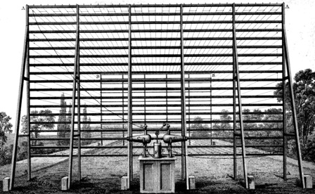

ଟେଲିଗ୍ରାଫକୁ ଓଡିଆରେ ଦୂରଲିଖ କୁହାଯାଏ। ଏହି ଯନ୍ତ୍ର ସାଧାନରେ ସୂଚନା (message)କୁ ପ୍ରେରଣ(transmit)
ଓ ଗ୍ରହଣ(receive) କରି ହୁଏ। ଯଦିଓ ସୂଚନାର ପ୍ରସାରଣ ଏବଂ ଗ୍ରହଣର ବହୁ ସାଧନ ବ୍ୟବହାର ହୋଇଛି, କିନ୍ତୁ ସାଧାରଣତଃ ଟେଲିଗ୍ରାଫ କହିଲେ ବିଦ୍ୟୁତଚାଳିତ ଟେଲିଗ୍ରାଫକୁ (electric telegraph) ସୁଚାଏ । ଟେଲିଫୋନ ପୂର୍ବରୁ ଟେଲିଗ୍ରାଫହିଁ ସୂଚନା ପଠାଇବାର ଦ୍ରୁତତ୍ତମ ଓ ସର୍ବୋତ୍ତମ ଉପାୟଥିଲା ।
ଟେଲିଗ୍ରାଫ ବିଶ୍ଵର ସର୍ବପ୍ରଥମ ବିଦ୍ୟୁତ (electricity) ଦ୍ଵାରା ପ୍ରଚଳିତ ବାର୍ତ୍ତା ଆଦାନପ୍ରଦାନକାରୀ ମାଧ୍ୟମ (messaging system) ମଧ୍ୟ ଅଟେ ।
କୁକ ଓ ନୀଡ଼ଲନ୍କ ଦ୍ୱାରା ନିର୍ମିତ୍ତ ଟେଲିଗ୍ରାଫ © The Board of Trustees of the Science Museum
ଟେଲିଗ୍ରାଫ ସମ୍ବଧୀତରେ ପ୍ରଶ୍ନ ଏବଂ ଉତ୍ତର (FAQ)
ଟେଲିଗ୍ରାଫି କଣ?(What is telegraphy?)
ଟେଲିଗ୍ରାଫ ଦ୍ଵାରା ବାର୍ତ୍ତାର ଆଦାନପ୍ରଦାନକୁ ଟେଲିଗ୍ରାଫୀ କୁହାଯାଏ।
ଟେଲିଗ୍ରାମ କଣ (telegram kana; what is telegram)?
ଯେବେ ଟେଲିଗ୍ରାଫି ସେବା ଏକ ସରକାରୀ କିମ୍ବା ଘରୋଇ ସଂସ୍ଥା ବା କମ୍ପାନୀ (government ଓ non-government companies) ଦ୍ଵାରା ସାଧାରଣ ଜନତାଙ୍କୁ ପ୍ରଦାନ କରାଯାଏ, ତାହାକୁ ଟେଲିଗ୍ରାମ ସେବା ବୋଲି କୁହାଯାଏ।
ବିଶ୍ଵର କେଉଁ ଦେଶରେ ପ୍ରଥମ ଟେଲିଗ୍ରାମ ସେବା ଆରମ୍ଭ ହୋଇଥିଲା ଏବଂ ଏହାର ନାମ କଣ? (In which country was the world’s first telegram service started and what is its name?)
ବ୍ରିଟେନର “ଦି କୁକ ଆଣ୍ଡ ୱ୍ହେଟଷ୍ଟୋନ ଟେଲିଗ୍ରାଫ” (The Cooke and Wheatstone telegraph) ବିଶ୍ଵର ସର୍ବପ୍ରଥମ ଟେଲିଗ୍ରାଫି କମ୍ପାନୀ । ଏହି ବିଦ୍ୟୁତ ଚାଳିତ ଟେଲିଗ୍ରାଫ ଜନ୍ତ୍ର ଇଂରେଜୀ ବୈଜ୍ଞାନିକ ଉଇଲିୟାମ କୁକ ଓ ଚାର୍ଲ୍ସ ୱ୍ହେଟଷ୍ଟୋନଙ୍କ ଦ୍ଵାରା ଉଦ୍ଭାବିତ । ଏହା ଦ୍ଵାରା ୧୮୩୭ ମସିହାରେ ଲଣ୍ଡନର ଏଉଷ୍ଟନ ଓ କ୍ୟାମଡେନ ରେଳଷ୍ଟେସନ ମଧ୍ୟରେରେ ବାର୍ତ୍ତାର ଆଦାନପ୍ରଦାନ ହୋଇଥିଲା।
ବିଶ୍ଵର ପ୍ରଥମ ଇଲେକଟ୍ରିକ ଟେଲିଗ୍ରାଫ କିଏ ଉଦ୍ଭାବନ କରିଥିଲେ?
୧୮୧୬ରେ ବ୍ରିଟିଶ ଉଦ୍ଭାବକ ଫ୍ରାନସିସ ରୋନାଲ୍ଡ୍ସ (Francis Ronalds) ଅପରିବର୍ତ୍ତିତ ବା ଷ୍ଟାଟିକ୍ ବିଦ୍ୟୁତ୍ ଶକ୍ତି (static electricity) ଦ୍ଵାରା ଚାଲୁଥିବା ଟେଲିଗ୍ରାଫର ଉଦ୍ଭାବନ କରିଥିଲେ।

ଫ୍ରାନସିସଙ୍କ ଦ୍ୱାରା ନିର୍ମିତ୍ତ ବିଶ୍ୱର ପ୍ରଥମ ଟେଲିଗ୍ରାଫ
ଟେଲିଟାଇପରାଇଟର କଣ? (teletypwriter kana / what is teletypewriter)
ଟେଲିଟାଇପରାଇଟର ବା ଟେଲିପ୍ରିଣ୍ଟର (teleprinter) ଏକ ଲିପି ମୁଦ୍ରଣ ବା ଟାଇପ ମେସିନ ଯାହାଦ୍ୱାରା ଟେଲିଗ୍ରାଫପାଇଁ ଆବଶ୍ୟକ ବାର୍ତ୍ତାକୁ ଟାଇପ କରିବା ସହିତ ଭବିଷ୍ୟତରେ ପ୍ରେରଣକରିବାପାଇଁ ଅଫଲାଇନରେ (offline)ରେ ସାଇତି (save) କରି ରଖାଯାଇ ହୁଏ ।